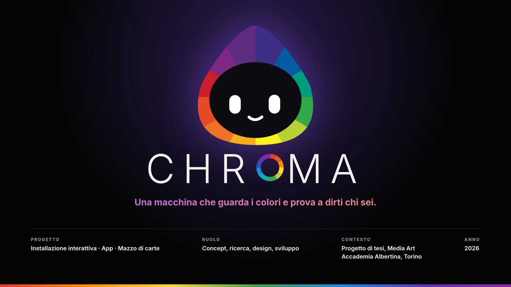
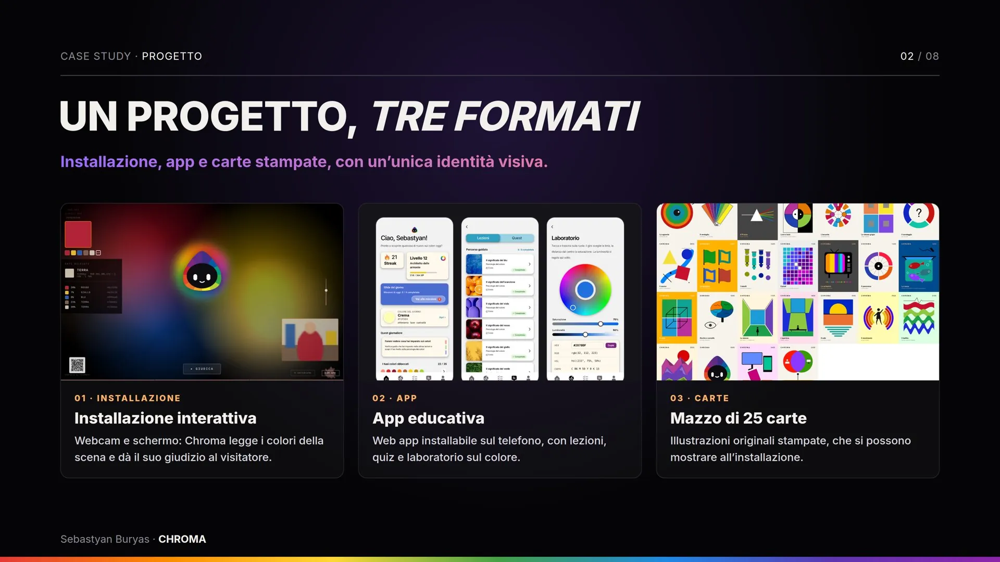
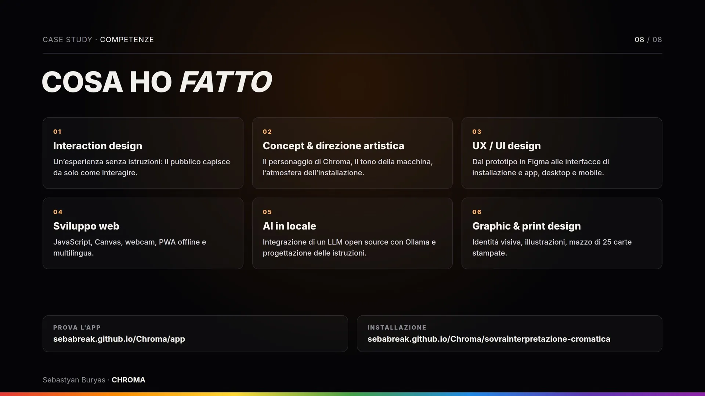
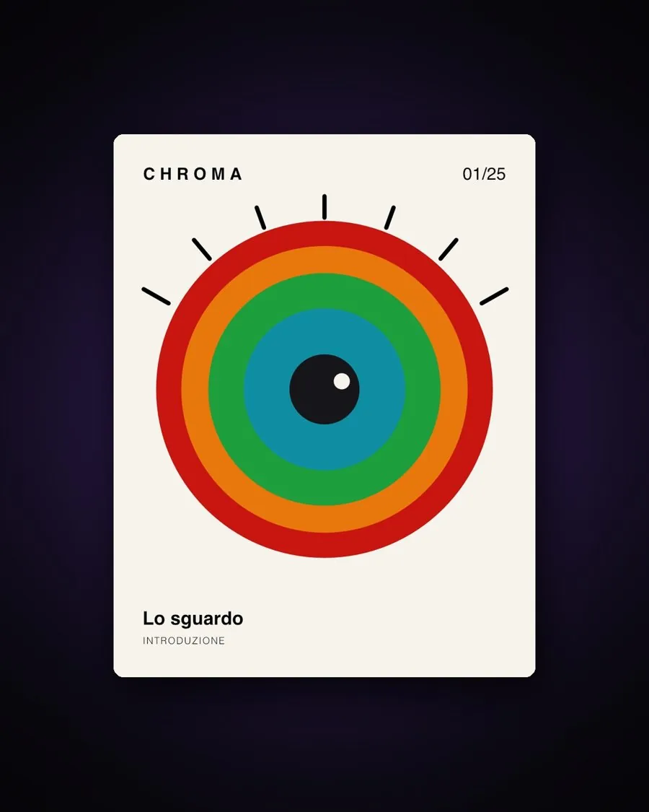
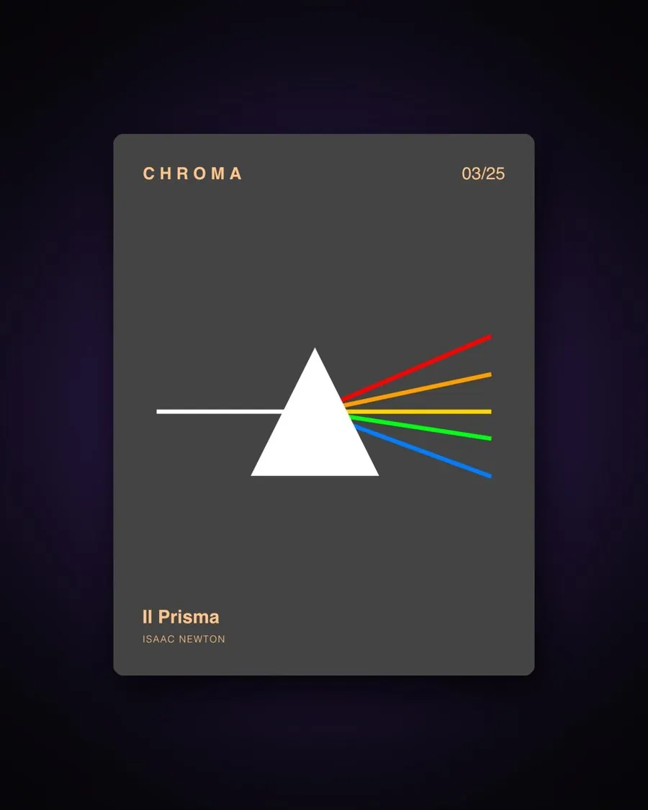
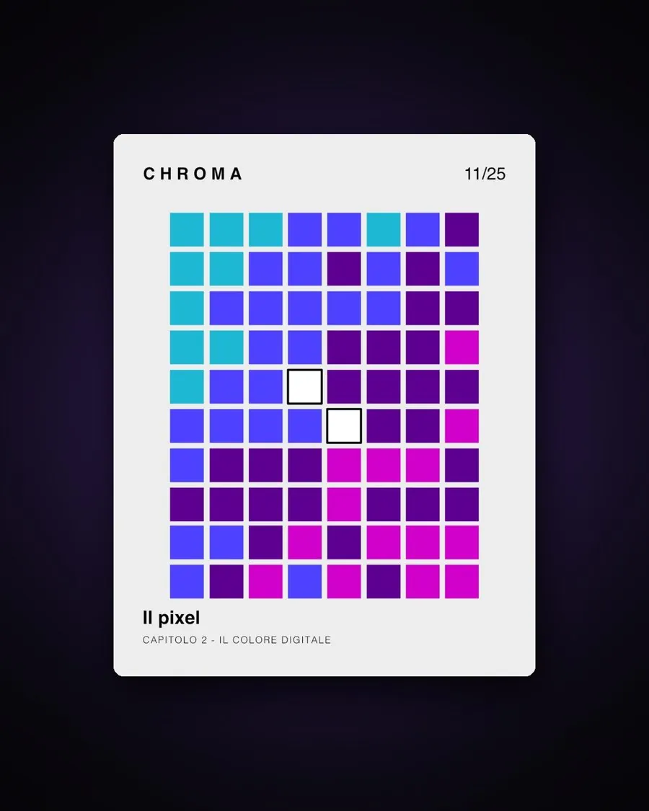
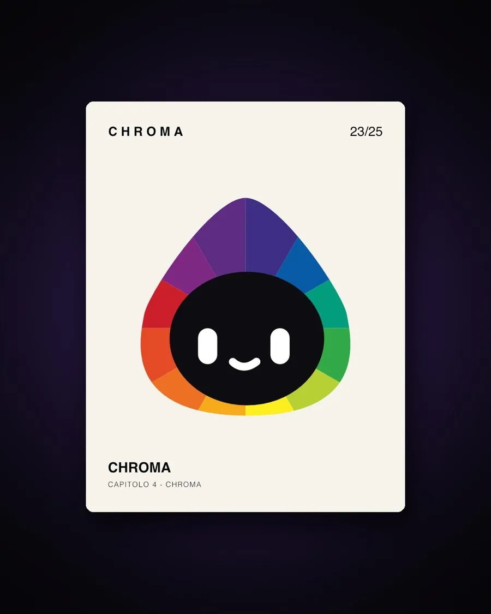

CHROMA
Un'installazione sulla sovrainterpretazione cromatica. Una webcam estrae i colori dominanti di chi le sta davanti e un'AI in locale gli attribuisce stati d'animo che non può conoscere. Poi chiede: ti riconosci in questa interpretazione?
Attorno all'installazione: un'app didattica disegnata in Figma e scritta in HTML, CSS e JavaScript, un mazzo di 25 carte riconosciute dall'installazione e la tesi stampata con composizioni cromatiche leggibili da CHROMA.
La ricerca è partita dalla tesi triennale sulla psicologia del colore nel cinema ed è arrivata alla lettura del colore da parte degli algoritmi.